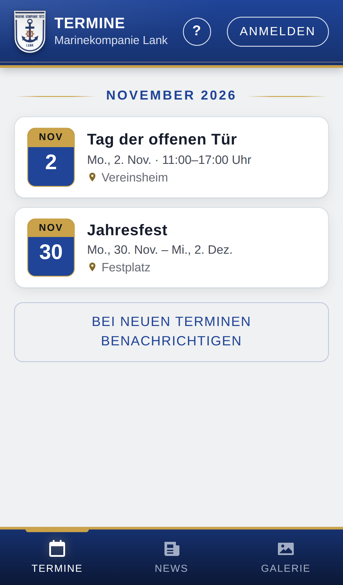
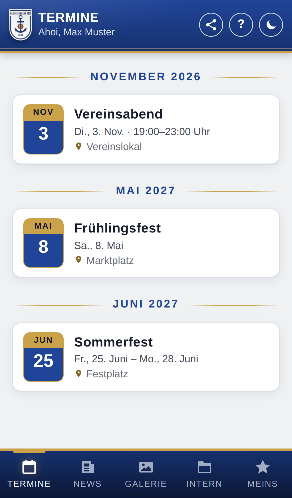
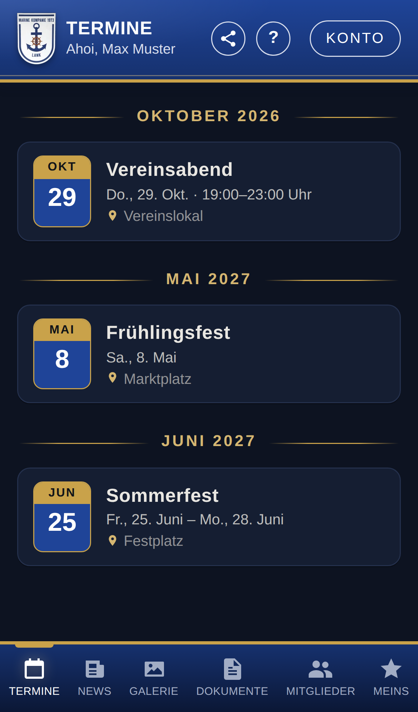
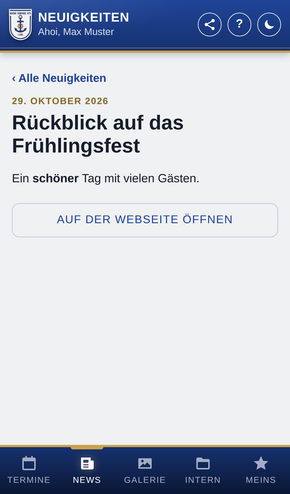
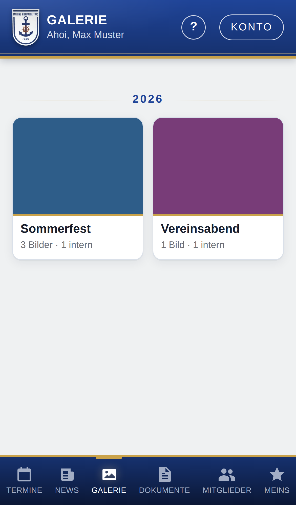
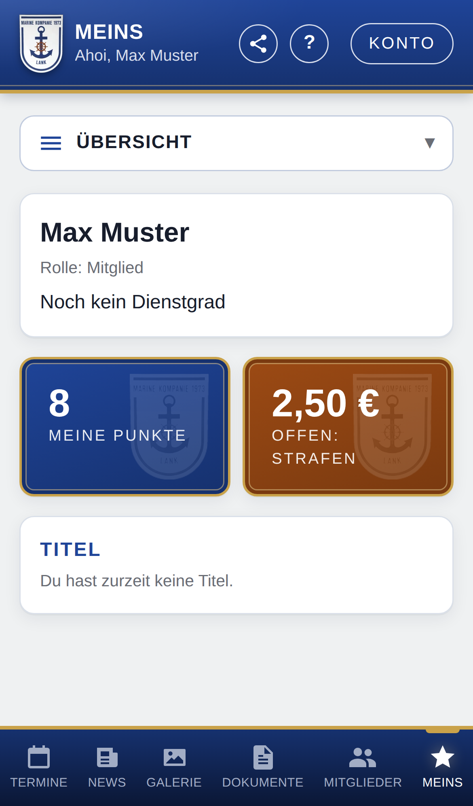

Wir haben eine WordPress-Webseite
Die App wird ein Teil der Webseite. Benutzer, Anmeldung und Neuigkeiten kommen aus WordPress.
- Datei herunterladen (nicht entpacken).
- In WordPress unter Plugins → Neues Plugin hinzufügen → Plugin hochladen die Datei auswählen und Jetzt installieren klicken.
- Aktivieren klicken. Die App ist dann unter
eure-webseite.de/app/erreichbar.
Wir haben keine WordPress-Webseite
Ihr braucht nur Webspace mit PHP – den hat fast jedes Hosting-Paket. Eine Datenbank müsst ihr nicht anlegen.
- Datei
install.phpherunterladen. - Im Dateimanager eures Hosters (oder per FTP) einen Ordner
appanlegen und die Datei hineinladen. eure-webseite.de/app/install.phpim Browser öffnen. Der Installer erledigt den Rest und führt durch die Einrichtung.






Updates kommen danach automatisch. 0.1.0.8 vom 21.10.2026
Handbuch: Installation, Einrichtung und Hilfe für alle Rollen